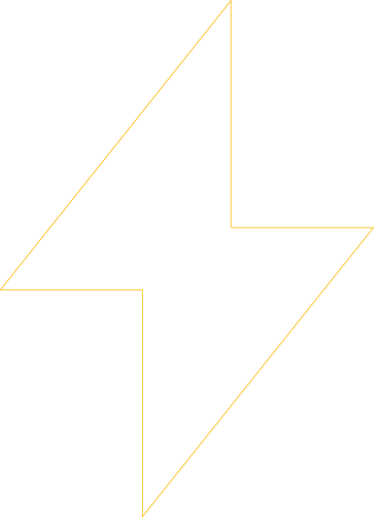
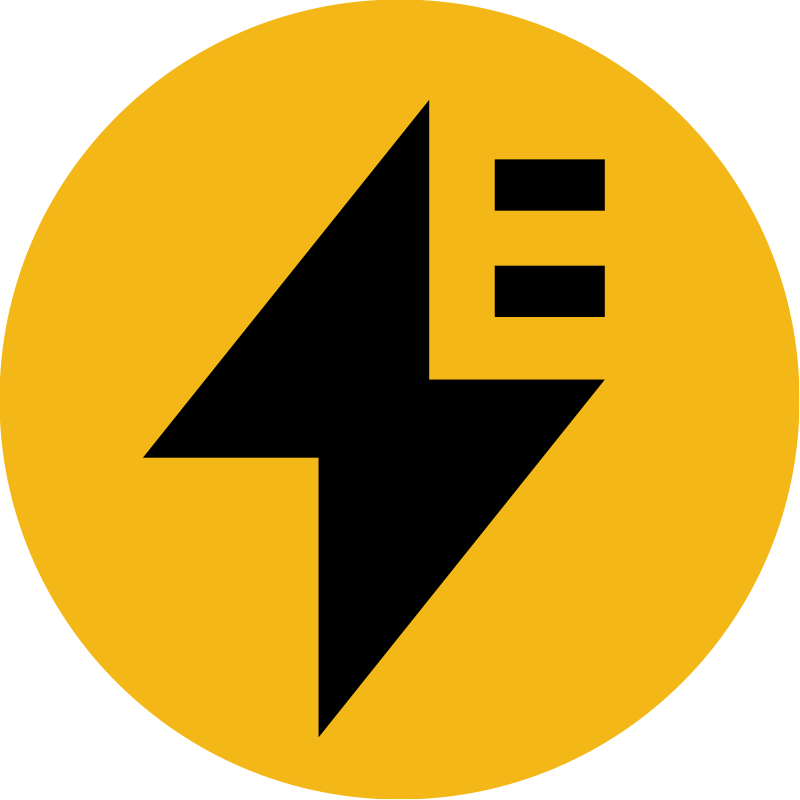
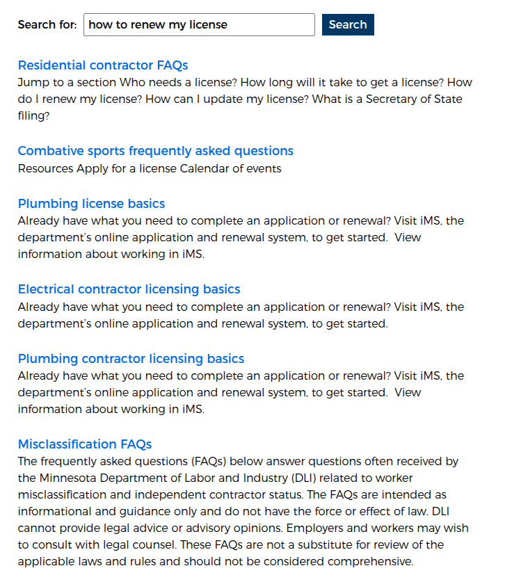
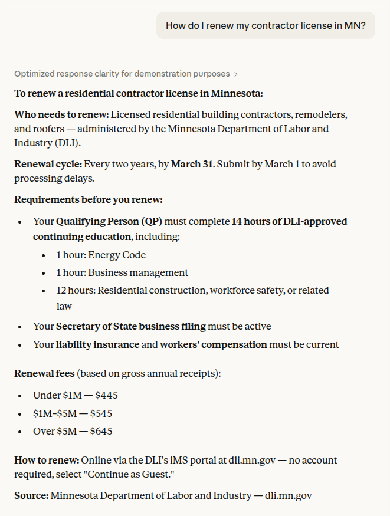

A Practical Guide
Dan Moriarty & Tim Broeker — Electric Citizen
Enterprise Drupal · 15 Years in State & Local Gov

Helping our clients figure out what AI means for their web presence.

Government search is stuck in the past — AI is widening the gap every day.
20 years later search is better, but not a lot better. Today users want answers, not links.


They're asking ChatGPT or Gemini instead of searching your site.
The answers they get back are pretty good.
But they come from third-party vendor sites, not your .gov site.
The answers can be factually incorrect.
It's whether your agency controls the answers — on your site and off.
Let's get on the same page.
What even is AI Search? A chatbot?
How do we get from here to there?
Depending on who's talking, it might mean...
Five stages. Each one builds on the last.
You search. You hunt.
Returns a list ranked by keyword relevance
User does all the interpretive work
Where almost every gov site is today
Familiar. Cheap. Often deeply frustrating.
You search. It understands.
Understands intent, not just keywords
Finds the right page even if exact words don't match
Still returns links — not answers
Low risk. Achievable now. No generative AI.
Meaning, not just words
No pages contain the exact phrase "kayak registration"
It knew what you meant.
You ask. It answers. You can verify.
Natural language question — direct answer
Generated only from your approved content
Every answer cites its source
No hallucination — if the content doesn't exist, neither does the answer
Submit form BC-100 with your CE certificate and the $100 fee. Renewals are due by your license anniversary date.
The realistic path for government right now.
You talk. It assists.
Multi-turn — remembers context within a session
Handles follow-ups and clarifications naturally
Grounding still required — more critical, not less
Aspirational for most gov orgs right now.
You describe a goal. It acts.
Doesn't just answer — takes steps on your behalf
Search disappears — citizen states a need, system resolves it
Nobody in government is here yet
Requires everything above it to be solid.
GOAL → STEPS → RESOLUTION
How to start the journey to Stage 3 and beyond!
The limitations are real.
Outdated content — Last reviewed 2019. AI cites every stale page confidently.
Orphaned pages — Five CMS migrations deep. Nobody owns them.
Org-chart IA — Built around departments, not citizen tasks.
Under-resourced — 1-2 people running an entire state portal.
Bolt an LLM onto a broken content foundation and you get a confident, well-spoken wrong answer.
In government, that's a liability.
Before you add AI, fix what it will read.
AI search quality is directly proportional to content quality.
A map, not a prescription.
Cludo, Coveo
Stage 3 & 4 today. Gov-specific features. No dev team required.
Fastest to deploy
Azure · Vertex · AWS
Inside your enterprise agreement. FedRAMP authorized. Drupal integration paths exist.
Most underused option
Drupal AI + Search API + Vector DB
Own your architecture. Own your data. No vendor lock-in. Swap LLM providers freely.
Most control, most investment
e.g. Cludo, Coveo, and other up-and-comers
Microsoft Azure · Google Vertex AI · AWS
Ask your IT department before signing a new vendor contract. You may already be paying for this.
Drupal AI + Search API + Vector DB + LLM
Whichever path you choose:
Your content has to be current.
Your content has to be structured.
Your content has to be governed.
AI doesn't fix bad content.
It retrieves it. Generates from it. Cites it. Confidently.
Where government actually is right now.
Most states are "developing" and prototyping across all AI readiness categories. The ones who look "behind" are often just being responsible.
Dan Moriarty — Co-founder
Tim Broeker — Co-founder
electriccitizen.com
We've been working in state & local government for 15 years. Right now there is no more interesting moment to be doing it.